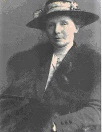

The Dunlops
Miss Ellen Smith Dunlop (1867–1958)

Portrait of Ellen Smith Dunlop. Photograph supplied by Doug Garceau, November 25, 2026. The photographer and date are not recorded. A portrait of her is also in the Charlie Todd Collection on the Quothquan and Thankerton Community Council website.
Ellen Smith Dunlop was the only child of Nathaniel Dunlop and his wife Ellen Smith, who died soon after her birth in 1867. Her father never remarried. From 1898 she lived with him at Shieldhill, the estate above the village of Quothquan, and she stayed there for the rest of her life.
Her work in Quothquan
The newspapers show Ellen as the working hand behind the family’s life in the village.
| Date | What the record says | Source |
|---|---|---|
| December 1900 | Miss Dunlop pays for the Quothquan Christmas party. | Hamilton Advertiser, December 29, 1900 |
| 1903 | She and her father build Shieldhill Hall in Quothquan for evening worship, about 400 feet from Gean Cottage. | Historic Environment Scotland, LB12995 |
| July 11, 1906 | She organizes the Scotch Girls’ Friendly Society visit, meets the party at Quothquan and hosts it at Shieldhill. | Hamilton Advertiser, July 21, 1906 |
| Winter 1906–07 | At the closing concert of the hall’s winter classes, her father chairs and she plays the piano. | Hamilton Advertiser, April 6, 1907 |
| 1911 | She finances the Thankerton Creamery, opened that year. | Quothquan and Thankerton Community Council, Historical Photographs |
| November 1918 | A Women’s Rural Institute is formed in Shieldhill Hall. | Hamilton Advertiser, November 16, 1918, page 5 |
| 1940 | She shows Highland cattle under the herd name “of Quothquan.” | Transactions of the Highland and Agricultural Society (1940) |
Her father’s death and her own
Sir Nathaniel died at Shieldhill in 1919. The Chicago Daily Tribune reported that he “is survived by one daughter.” His will named her first among his heirs and left her alone £100,000. She kept Shieldhill until her death in 1958. The community council’s history says she left most of her estate to her staff, including her maid and companion of fifty years, and to local charities, and Shieldhill Hall to the Church of Scotland.
Every record of Ellen Dunlop on this site
- November 17, 1919Obituary: “Sir Nathaniel Dunlop, Steamboat Man, Is Dead”
Item 121 - February 19, 1920Will of Sir Nathaniel Dunlop, pages 494–495
Item 27
Still to find
- Who took her portrait, and when.
- Her 1958 death record and will (National Records of Scotland).
- The 1911 census entry for Shieldhill House.
- Tom Brown’s book on Libberton and Quothquan, which mentions her.
Sir Nathaniel Dunlop, her father → · Dr. James Dunlop, her uncle → · Binnie Dunlop, her cousin →